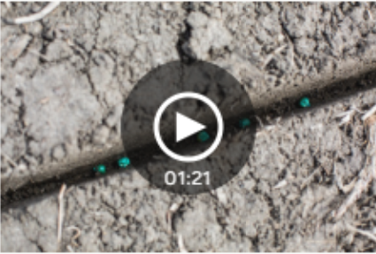

Lotto Max: un groupe de Québec gagne le gros lot de 70 millions
(Montréal) Le gros lot de 70 millions de la loterie Lotto
Max qui a été remporté mardi soir dernier grâce à une sélection vendue au...
Publié à 10h32
Un sixième cas de COVID-19 confirmé en Ontario
(Toronto) L'Ontario compte maintenant un sixième cas confirmé du nouveau
coronavirus, et les responsables de la santé affirment qu'il...
Publié à 9h30
L'Hôpital du Suroît aura un nouveau bâtiment en septembre
(Salaberry-De-Valleyfield) La ministre de la Santé et des Services sociaux,
Danielle McCann, annonce que la construction d'un...
Publié à 8h25
 Pesticides «tueurs d'abeilles»: un usage injustifié dans 95% des champs du Québec
La recherche sur les pesticides à l'origine de l'affaire Louis Robert vient
de faire l'objet d'une publication formelle dans une prestigieu...
Publié à 5h00 | Mis à jour à 8h14